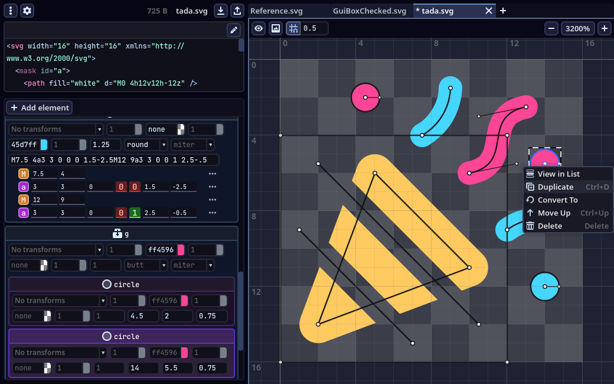
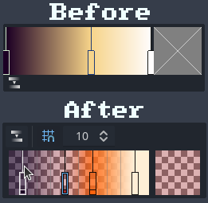
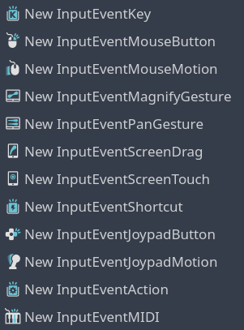
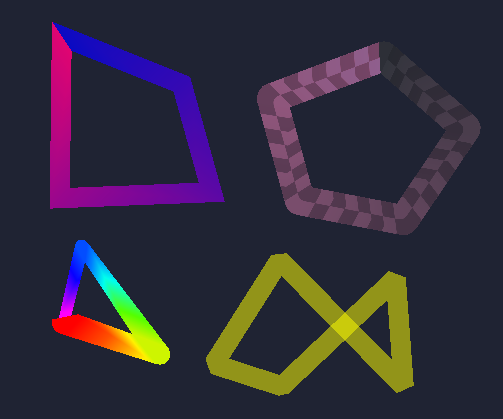

In this website I showcase my personal projects and undertakings, like a portfolio.
I'm a programmer from Bulgaria, known on the internet (e.g. Github) as Mew Pur Pur or Espe, and my projects are attributed to this name.
During my high school years, I was a mathematician who competed internationally and represented my country. I went to a German university to study math, but as I got interested in a few technologies, mainly Godot Engine, I decided to pursue Computer Science instead. In the end, I majored in Computer Science and minored in Mathematics.
Github link: https://github.com/MewPurPur
В този уебсайт представям личните си проекти и начинания, като портфолио.
Аз съм програмист от България, в интернет (напр. Github) минавам с псевдонима "Mew Pur Pur" или "Espe", затова проектите ми са приписани на това име.
В гимназията бях математик, състезаващ се международно и представящ страната. Отидох в немски университет да уча математика, но там започнах да се занимавам с няколко технологии, основно Godot Engine, което ме мотивира да се насоча вместо това към компютърните науки. В края на краищата, аз взех Компютърни науки като основна степен и Математика като втора степен.
Github линк: https://github.com/MewPurPur
An open-source SVG editor in late alpha.
Unlike most SVG editors, which focus on powerful features for artists, GodSVG's target users are programmers looking to create optimized vector graphics. It's described in-depth in the GodSVG Website I made with a friend.
Редактор на SVG файлове в алфа версия.
За разлика от повечето редактори на SVG файлове, които се фокусират върху мощни функции за артисти, GodSVG е насочен към програмисти, които целят да създават оптимизирани векторни графики. Описал съм това подробно в the уебсайта на GodSVG който направих с един приятел.
This project has gathered a sizable following and a positive reception, it has almost 2000 stars on Github despite being in alpha. Maintaining and leading it is my current main hobby.
Този проект събра много последователи и добри отзиви, има почти 2000 звезди на Github въпреки че е още в алфа. Поддържането и воденето му е главното ми хоби в момента.
Before shifting my focus on GodSVG, I have made a number of meaningful contributions to Godot Engine's codebase. Below I've listed the most major ones:
Преди да се фокусирам върху GodSVG, бях направил някои значителни приноса към кода на Godot Engine. Отдолу съм изброил най-големите:
I reworked Godot's Curve and Gradient editors to significantly improve their usability and appearance in pull requests #74959 and #71915. I've heard a lot of feedback from users who loved these changes.
Преработих редакторите на ресурсите Curve и Gradient за да подобря значително как изглеждат и колко удобно може да се използват в PRs #74959 и #71915. Получих много отзиви от потребители, които харесаха тези промени.
I have created dozens of minimalistic icons for Godot, for example in pull requests #77376, #78903, and many more. I also went through all SVG files used by the engine, manually optimizing and fixing them up, reducing the total file size by more than half - even though the SVGs had been optimized in advance.
Създал съм десетки минималистични иконки за Godot, например в PRs #77376, #78903 и много други. Освен това, аз оптимизирах и поправих SVG файловете използвани от Godot дотолкова, че намалих общият им размер наполовина - въпреки че те вече бяха оптимизирани предварително.
I implemented the ability to close polylines in Godot in pull request #79182. This is far more complex than it seems, as polylines can have variable width, texturing, gradients, and different joint modes to connect segments.
Въведох способността да се затварят полилиниите на Godot в PR #79182. Това е далеч по-сложно, отколкото изглежда, защото полилиниите могат да имат променлива широчина, текстури, градиенти и различни съединения за отсечките.
A game project in early development that's currently paused.
The game already has its basic set of fundamental systems:
The pitch is as follows:
Embark on an thrilling journey through the sky archipelago! Traverse through hundreds of hand-made stages and learn about the secrets of the isles in this super tight platformer - or build your own adventure inside the level editor!
Игра в ранен етап на разработване, в момента разработването е на пауза.
Играта вече разполага с повечето основни системи:
Рекламата е както следва:
Тръгни на вълнуващо приключение през небесният архипелаг! Пътувай през стотици ръчно направени стаи и научи тайните на островите във този супер стегнат платформър - или създай свое собствено приключение в редактора на нива!
The above footage is a demonstration of the level editor, not a trailer. The game is far too early in development for a trailer.
Видеото отгоре е просто демонстрация на редактора на нива, а не трейлър. Играта е в твърде ранен етап за трейлър.